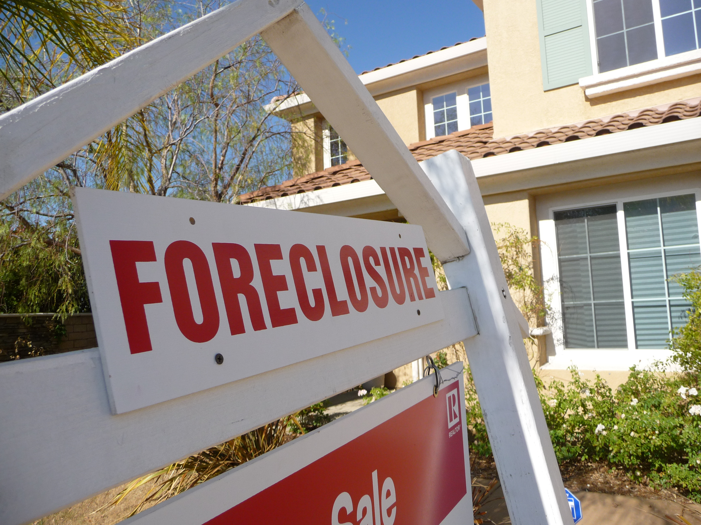

The Play Call — Event 3 of 4
The $700 Billion Bailout
The banks caused the crash. The government saved the banks. The families who lost their homes did not get a bailout.
United States · 2008 · TARP — Troubled Asset Relief Program

The banks caused the crash. The government saved the banks. The families who lost their homes did not get a bailout.
In 2008, the U.S. financial system came close to total collapse. Banks had spent years making risky mortgage loans to homebuyers who could not afford them — then packaging those loans and selling them to investors worldwide as if they were safe.
When homeowners started defaulting on their mortgages in large numbers, the value of those packaged loans crashed. Banks that had bet everything on those packages were suddenly worthless. On September 15, 2008, Lehman Brothers — one of the largest investment banks in the world — filed for bankruptcy. It was the largest bankruptcy in American history.
Credit markets froze. Businesses could not borrow money to make payroll. The entire global financial system was hours away from seizing up completely. The U.S. Treasury and Federal Reserve told Congress that without immediate action, the country faced a second Great Depression within days.
"If we don't do this, we may not have an economy on Monday."
— Treasury Secretary Hank Paulson to Congressional leaders, September 2008

Congress passed the Troubled Asset Relief Program — TARP — on October 3, 2008. The government was authorized to spend up to $700 billion to purchase failing assets from banks and inject capital directly into financial institutions. The goal was to prevent the total collapse of the banking system.
The money moved fast. Within weeks, the Treasury had pumped billions into the largest banks in the country — JPMorgan Chase, Bank of America, Citigroup, Goldman Sachs. The argument was simple: if these banks failed, every business, family, and institution that depended on credit would be cut off instantly. The damage would be catastrophic.
Critics made a different argument. The banks had taken enormous risks knowing that if things went wrong, they were too big to be allowed to fail. Economists called this "moral hazard" — the idea that rescuing bad decisions teaches institutions to keep making them. The people who caused the crash got rescued. The people who lost their homes did not.
The banking system did not collapse. Credit markets eventually reopened. The U.S. economy did not enter a second Great Depression. By the government's own accounting, TARP ultimately cost taxpayers about $31 billion — far less than the $700 billion ceiling — because much of the money was paid back with interest.
The government argues that without TARP, the economic damage would have been ten times worse for ordinary Americans.
Eight million Americans lost their jobs. Nearly four million families lost their homes to foreclosure in 2010 alone. The government never created a comparable rescue program for homeowners — only for banks. Executive bonuses at bailed-out banks continued. No senior bank executive went to prison for the decisions that caused the crisis.
The national debt grew by trillions. Communities of color lost generational wealth at rates far higher than white communities and have never fully recovered.